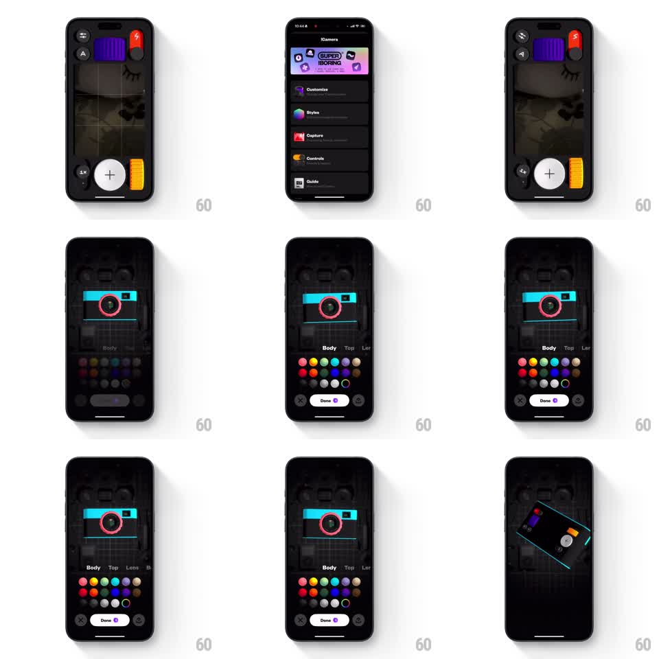

Media
Frame-by-frame

Rebuild this interaction 1:1: Not Boring Camera's customize morph - the live camera interface morphs into a skeuomorphic 3D camera model surrounded by a part-color dot grid, colors apply per part, and the model spins to show off the build.

Rebuild this interaction 1:1: Not Boring Camera's customize morph - the live camera interface morphs into a skeuomorphic 3D camera model surrounded by a part-color dot grid, colors apply per part, and the model spins to show off the build.
## Integration
Integration: stack-agnostic spec - springs given as stiffness/damping, timed motions as duration + curve; map every value to your framework and animation library of choice.
## Scene
The camera UI: viewfinder with purple film door, yellow grip, red flash, big white shutter. A settings list ("!Camera", Customize, Styles, Capture, Controls, Guide). The customize screen: a 3D camera model front-on (teal body, pink lens ring) over a blueprint backdrop, a part tab row (Body, Top, Lens, Back), a grid of color dots, and a "Done" pill with a change counter. Final beat: the model rotates to a 3/4 angle showing the customized top and grip.
## Motion spec
Pattern: interface-to-model morph with per-part recoloring.
- Entering customize: the live camera UI's parts fly apart slightly and reassemble as the 3D model (parts translate + scale to their model positions, 400ms, spring ~280/18) while the viewfinder fades to the blueprint backdrop (300ms).
- Part tabs: tapping switches the active part (tab underline slides, spring ~300/22); the model highlights that part (others dim 30%, 200ms).
- Color dots: tapping a dot recolors the active part (color tween 200ms) with a dot pop (scale 1 -> 1.3 -> 1, spring ~340/14) and a checkmark on the chosen dot; the Done counter ticks up with a badge pop.
- The model idles with a slow turntable sway (rotateY +-8deg, 4s).
- Done: the model spins to the 3/4 hero angle (rotateY 0 -> -30deg + rotateX 10deg, 600ms, ease-in-out) with a glint sweeping the lens (200ms), then the view morphs back to the live camera UI wearing the new colors (reverse of entry, 400ms).
## Calibration
- Part recolors are instant-feeling: 200ms max, no fading through white.
- The model's materials stay matte-plastic skeuomorphic - soft top light, contact shadow.
## Reduced motion
Morphs crossfade (300ms); recolors instant; no turntable or spin.
## Don't miss
- The morph's continuity: shutter button becomes the model's shutter, film door becomes its back - parts map 1:1.
- The blueprint grid backdrop remains static and faint throughout.